Chapter 8: Potential Energy and Conservation of Energy¶
Introduction¶
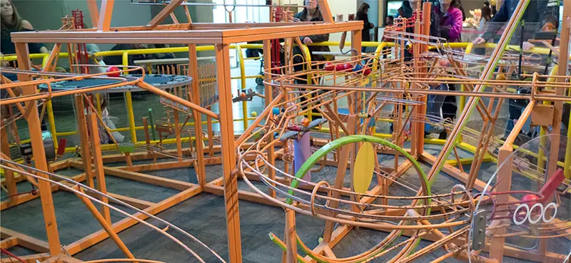
In George Rhoads’ rolling ball sculpture, the principle of conservation of energy governs the changes in the ball’s kinetic energy and relates them to changes and transfers for other types of energy associated with the ball’s interactions. In this chapter, we introduce the important concept of potential energy. This will enable us to formulate the law of conservation of mechanical energy and to apply it to simple systems, making solving problems easier. In the final section on sources of energy, we will consider energy transfers and the general law of conservation of energy. Throughout this book, the law of conservation of energy will be applied in increasingly more detail, as you encounter more complex and varied systems, and other forms of energy.
8.1 Potential Energy of a System¶
Learning Objectives
By the end of this section, you will be able to:
- Relate the difference of potential energy to work done on a particle for a system without friction or air drag
- Explain the meaning of the zero of the potential energy function for a system
- Calculate and apply the gravitational potential energy for an object near Earth’s surface and the elastic potential energy of a mass-spring system
In Work, we saw that the work done on an object by the constant gravitational force, near the surface of Earth, over any displacement is a function only of the difference in the positions of the end-points of the displacement. This property allows us to define a different kind of energy for the system than its kinetic energy, which is called potential energy. We consider various properties and types of potential energy in the following subsections.
Potential Energy Basics¶
In Motion in Two and Three Dimensions, we analyzed the motion of a projectile, like kicking a football in Figure 8.2. For this example, let’s ignore friction and air resistance and begin the analysis immediately after the kick, at the start of the projectile motion of the ball. As the football rises, the work done by the gravitational force on the football is negative, because the ball’s displacement is positive vertically and the force due to gravity is negative vertically. We also noted that the ball slowed down until it reached its highest point in the motion, thereby decreasing the ball’s kinetic energy. This loss in kinetic energy translates to a gain in gravitational potential energy of the football-Earth system.
As the football falls toward Earth, the work done on the football is now positive, because the displacement and the gravitational force both point vertically downward. The ball also speeds up, which indicates an increase in kinetic energy. Therefore, energy is converted from gravitational potential energy back into kinetic energy.
![An illustration of a football’s trajectory and energy. The kicker kicks the ball, doing work on it and giving it maximum kinetic energy. The potential energy is minimum. This is point one. On the way up, at point two, the kinetic energy of the ball decreases and its potential energy decreases. At the highest point, point three, the kinetic energy of the ball is at its minimum and its potential energy is maximum. As the ball descends, point four, the kinetic energy increases and the potential energy decreases. The receiver catches the ball at the same height above the ground as it was kicked, at point five. The kinetic energy equals maximum, potential energy is minimum.](img/cnx-uphysics-08-01-football.webp)
Based on this scenario, we can define the difference of potential energy from point A to point B as the negative of the work done:
equation callout
This formula explicitly states a potential energy difference, not just an absolute potential energy. Therefore, we need to define potential energy at a given position in such a way as to state standard values of potential energy on their own, rather than potential energy differences. We do this by rewriting the potential energy function in terms of an arbitrary constant,
equation callout
The choice of the potential energy at a starting location of \({\mathbf{\vec{r}}}_{0}\) is made out of convenience in the given problem. Most importantly, whatever choice is made should be stated and kept consistent throughout the given problem. There are some well-accepted choices of initial potential energy. For example, the lowest height in a problem is usually defined as zero potential energy, or if an object is in space, the farthest point away from the system is often defined as zero potential energy. Then, the potential energy, with respect to zero at \({\mathbf{\vec{r}}}_{0},\) is just \(U(\vec{r}).\)
As long as there is no friction or air resistance, the change in kinetic energy of the football equals negative of the change in gravitational potential energy of the football. This can be generalized to any potential energy:
Let’s look at a specific example, choosing zero potential energy for gravitational potential energy at convenient points.
Example 8.1 Basic Properties of Potential Energy
A particle moves along the x-axis under the action of a force given by \(F=-ax^{2}\), where \(a=3\:\text{N/m}^{2}\). (a) What is the difference in its potential energy as it moves from \(x_{A}=1\:\text{m}\) to \(x_{B}=2\:\text{m}\)? (b) What is the particle’s potential energy at \(x=1\:\text{m}\) with respect to a given 0.5 J of potential energy at \(x=0\)?
Strategy
(a) The difference in potential energy is the negative of the work done, as defined by Equation 8.1. The work is defined in the previous chapter as the dot product of the force with the distance. Since the particle is moving forward in the x-direction, the dot product simplifies to a multiplication (\(\widehat{\mathbf{i}}\cdot\widehat{\mathbf{i}}=1\)). To find the total work done, we need to integrate the function between the given limits. After integration, we can state the work or the change in potential energy. (b) The potential energy function, with respect to zero at \(x=0\), is the indefinite integral encountered in part (a), with the constant of integration determined from Equation 8.3. Then, we substitute the x-value into the function of potential energy to calculate the potential energy at \(x=1\:\text{m}.\)
Solution
a. The work done by the given force as the particle moves from coordinate x to \(x+dx\) in one dimension is
Substituting this expression into Equation 8.1, we obtain
b. The indefinite integral for the potential energy function in part (a) is
and we want the constant to be determined by
Thus, the potential energy with respect to zero at \(x=0\) is just
Therefore, the potential energy at \(x=1\:\text{m}\) is
Significance
In this one-dimensional example, any function we can integrate, independent of path, is conservative. Notice how we applied the definition of potential energy difference to determine the potential energy function with respect to zero at a chosen point. Also notice that the potential energy, as determined in part (b), at \(x=1\:\text{m}\) is \(U(1\:\text{m})=1\:\text{J}\) and at \(x=2\:\text{m}\) is \(U(2\:\text{m})=8\:\text{J}\); their difference is the result in part (a).
Check Your Understanding
In Example 8.1, what are the potential energies of the particle at \(x=1\:\text{m}\) and \(x=2\:\text{m}\) with respect to zero at \(x=1.5\:\text{m}\)? Verify that the difference of potential energy is still 7 J.
Answer
\((4.63\:\text{J})-(-2.38\:\text{J})=7.00\:\text{J}\)
Systems of Several Particles¶
In general, a system of interest could consist of several particles. The difference in the potential energy of the system is the negative of the work done by gravitational or elastic forces, which, as we will see in the next section, are conservative forces. The potential energy difference depends only on the initial and final positions of the particles, and on some parameters that characterize the interaction (like mass for gravity or the spring constant for a Hooke’s law force).
It is important to remember that potential energy is a property of the interactions between objects in a chosen system, and not just a property of each object. This is especially true for electric forces, although in the examples of potential energy we consider below, parts of the system are either so big (like Earth, compared to an object on its surface) or so small (like a massless spring), that the changes those parts undergo are negligible when included in the system.
Types of Potential Energy¶
For each type of interaction present in a system, you can label a corresponding type of potential energy. The total potential energy of the system is the sum of the potential energies of all the types. (This follows from the additive property of the dot product in the expression for the work done.) Let’s look at some specific examples of types of potential energy discussed in Work. First, we consider each of these forces when acting separately, and then when both act together.
Gravitational potential energy near Earth’s surface¶
The system of interest consists of our planet, Earth, and one or more particles near its surface (or bodies small enough to be considered as particles, compared to Earth). The gravitational force on each particle (or body) is just its weight mg near the surface of Earth, acting vertically down. According to Newton’s third law, each particle exerts a force on Earth of equal magnitude but in the opposite direction. Newton’s second law tells us that the magnitude of the acceleration produced by each of these forces on Earth is mg divided by Earth’s mass. Since the ratio of the mass of any ordinary object to the mass of Earth is vanishingly small, the motion of Earth can be completely neglected. Therefore, we consider this system to be a group of single-particle systems, subject to the uniform gravitational force of Earth.
In Work, the work done on a body by Earth’s uniform gravitational force, near its surface, depended on the mass of the body, the acceleration due to gravity, and the difference in height the body traversed, as given by Equation 7.4. By definition, this work is the negative of the difference in the gravitational potential energy, so that difference is
You can see from this that the gravitational potential energy function, near Earth’s surface, is
equation callout
You can choose the value of the constant, as described in the discussion of Equation 8.2; however, for solving most problems, the most convenient constant to choose is zero for when \(y=0,\) which is the lowest vertical position in the problem.
Example 8.2 Gravitational Potential Energy of a Hiker
The summit of Great Blue Hill in Milton, MA, is 147 m above its base and has an elevation above sea level of 195 m (Figure 8.3). (Its Native American name, Massachusett, was adopted by settlers for naming the Bay Colony and state near its location.) A 75-kg hiker ascends from the base to the summit. What is the gravitational potential energy of the hiker-Earth system with respect to zero gravitational potential energy at base height, when the hiker is (a) at the base of the hill, (b) at the summit, and (c) at sea level, afterward?
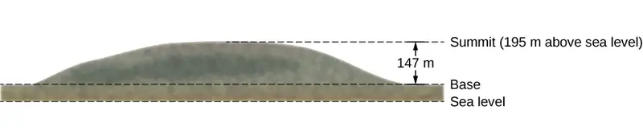
Strategy
First, we need to pick an origin for the y-axis and then determine the value of the constant that makes the potential energy zero at the height of the base. Then, we can determine the potential energies from Equation 8.5, based on the relationship between the zero potential energy height and the height at which the hiker is located.
Solution
a. Let’s choose the origin for the y-axis at base height, where we also want the zero of potential energy to be. This choice makes the constant equal to zero and
b. At the summit, \(y=147\:\text{m}\), so
c. At sea level, \(y=(147-195)\text{m}=-48\:\text{m}\), so
Significance
Besides illustrating the use of Equation 8.4 and Equation 8.5, the values of gravitational potential energy we found are reasonable. The gravitational potential energy is higher at the summit than at the base, and lower at sea level than at the base. Gravity does work on you on your way up, too! It does negative work and not quite as much (in magnitude), as your muscles do. But it certainly does work. Similarly, your muscles do work on your way down, as negative work. The numerical values of the potential energies depend on the choice of zero of potential energy, but the physically meaningful differences of potential energy do not. [Note that since Equation 8.2 is a difference, the numerical values do not depend on the origin of coordinates.]
Check Your Understanding
What are the values of the gravitational potential energy of the hiker at the base, summit, and sea level, with respect to a sea-level zero of potential energy?
Answer
35.3 kJ, 143 kJ, 0
Elastic potential energy¶
In Work, we saw that the work done by a perfectly elastic spring, in one dimension, depends only on the spring constant and the squares of the displacements from the unstretched position, as given in Equation 7.5. This work involves only the properties of a Hooke’s law interaction and not the properties of real springs and whatever objects are attached to them. Therefore, we can define the difference of elastic potential energy for a spring force as the negative of the work done by the spring force in this equation, before we consider systems that embody this type of force. Thus,
where the object travels from point A to point B. The potential energy function corresponding to this difference is
equation callout
If the spring force is the only force acting, it is simplest to take the zero of potential energy at \(x=0\), when the spring is at its unstretched length. Then, the constant in Equation 8.7 is zero. (Other choices may be more convenient if other forces are acting.)
Example 8.3 Spring Potential Energy
A system contains a perfectly elastic spring, with an unstretched length of 20 cm and a spring constant of 4 N/cm. (a) How much elastic potential energy does the spring contribute when its length is 23 cm? (b) How much more potential energy does it contribute if its length increases to 26 cm?
Strategy
When the spring is at its unstretched length, it contributes nothing to the potential energy of the system, so we can use Equation 8.7 with the constant equal to zero. The value of x is the length minus the unstretched length. When the spring is expanded, the spring’s displacement or difference between its relaxed length and stretched length should be used for the x-value in calculating the potential energy of the spring.
Solution
- The displacement of the spring is \(x=23\:\text{cm}-20\:\text{cm}=3\:\text{cm}\), so the contributed potential energy is \(U=\frac{1}{2}kx^{2}=\frac{1}{2}(4\:\text{N/cm}){(3\:\text{cm})}^{2}=0.18\:\text{J}\).
- When the spring’s displacement is \(x=26\:\text{cm}-20\:\text{cm}=6\:\text{cm}\), the potential energy is \(U=\frac{1}{2}kx^{2}=\frac{1}{2}(4\:\text{N/cm}){(6\:\text{cm})}^{2}=0.72\:\text{J}\), which is a 0.54-J increase over the amount in part (a).
Significance
Calculating the elastic potential energy and potential energy differences from Equation 8.7 involves solving for the potential energies based on the given lengths of the spring. Since U depends on \(x^{2}\), the potential energy for a compression (negative x) is the same as for an extension of equal magnitude.
Check Your Understanding
When the length of the spring in Example 8.3 changes from an initial value of 22.0 cm to a final value, the elastic potential energy it contributes changes by \(-0.0800\:\text{J}.\) Find the final length.
Answer
22.8 cm. Using 0.02 m for the initial displacement of the spring (see above), we calculate the final displacement of the spring to be 0.028 m; therefore the length of the spring is the unstretched length plus the displacement, or 22.8 cm.
Gravitational and elastic potential energy¶
A simple system embodying both gravitational and elastic types of potential energy is a one-dimensional, vertical mass-spring system. This consists of a massive particle (or block), hung from one end of a perfectly elastic, massless spring, the other end of which is fixed, as illustrated in Figure 8.4.
![A vertical mass spring system is illustrated. The upper end of the spring is attached to the ceiling. A block of mass m is attached to the lower end. The spring is drawn at two positions. On the left, the mass is in the equilibrium position. To the right of this, the spring is drawn with the mass pulled down a distance y sub pull. This position of the mass is labeled as h equal to zero. A graph of y as a function of X is shown to the rightly the illustrations, with y equals zero aligned with the equilibrium position in the illustrations. The plot is sinusoidal, with the minimum y at x=0 and even with the lower mass position in the illustrations.](img/cnx-uphysics-08-01-vertm-s-new.webp)
First, let's consider the potential energy of the system. We need to define the constant in the potential energy function of Equation 8.5. Often, the ground is a suitable choice for when the gravitational potential energy is zero; however, in this case, the highest point or when \(y=0\) is a convenient location for zero gravitational potential energy. Note that this choice is arbitrary, and the problem can be solved correctly even if another choice is picked.
We must also define the elastic potential energy of the system and the corresponding constant, as detailed in Equation 8.7. This is where the spring is unstretched, or at the \(y=0\) position.
If we consider that the total energy of the system is conserved, then the energy at point A equals point C. The block is placed just on the spring so its initial kinetic energy is zero. By the setup of the problem discussed previously, both the gravitational potential energy and elastic potential energy are equal to zero. Therefore, the initial energy of the system is zero. When the block arrives at point C, its kinetic energy is zero. However, it now has both gravitational potential energy and elastic potential energy. Therefore, we can solve for the distance y that the block travels before coming to a stop:
Example 8.4 Potential Energy of a Vertical Mass-Spring System
A block weighing \(1.2\:\text{N}\) is hung from a spring with a spring constant of \(6.0\:\text{N}\text{/}\text{m}\), as shown in Figure 8.4. (a) What is the maximum expansion of the spring, as seen at point C? (b) What is the total potential energy at point B, halfway between A and C? (c) What is the speed of the block at point B?
Strategy
In part (a) we calculate the distance \(y_{C}\) as discussed in the previous text. Then in part (b), we use half of the y value to calculate the potential energy at point B using equations Equation 8.4 and Equation 8.6. This energy must be equal to the kinetic energy, Equation 7.6, at point B since the initial energy of the system is zero. By calculating the kinetic energy at point B, we can now calculate the speed of the block at point B.
Solution
a. Since the total energy of the system is zero at point A as discussed previously, the maximum expansion of the spring is calculated to be:
b. The position of \(y_{B}\)is half of the position at \(y_{C}\) or \(yB=yC/2=-mg/k=\). The total potential energy at point B would therefore be:
c. The mass of the block is the weight divided by gravity.
The kinetic energy at point B therefore is 0.12 J because the total energy is zero. Therefore, the speed of the block at point B is equal to
Significance
Even though the potential energy due to gravity is relative to a chosen zero location, the solutions to this problem would be the same if the zero energy points were chosen at different locations.
Check Your Understanding
Suppose the mass in Equation 8.6 is doubled while keeping the all other conditions the same. Would the maximum expansion of the spring increase, decrease, or remain the same? Would the speed at point B be larger, smaller, or the same compared to the original mass?
Answer
It increases because you had to exert a downward force, doing positive work, to pull the mass down, and that’s equal to the change in the total potential energy.
Media
Engage the simulation below to learn about conservation of energy with a skater! Build tracks, ramps and jumps for the skater and view the kinetic energy, potential energy and friction as he moves. You can also take the skater to different planets or even space!
conservation of energy represented by a skater in phet simulation
A sample chart of a variety of energies is shown in Table 8.1 to give you an idea about typical energy values associated with certain events. Some of these are calculated using kinetic energy, whereas others are calculated by using quantities found in a form of potential energy that may not have been discussed at this point.
Table 8.1 Energy of Various Objects and Phenomena
| Object/phenomenon | Energy in joules |
|---|---|
| Big Bang | \({10}^{68}\) |
| Annual world energy use | \(4.0\:\times\:{10}^{20}\) |
| Large fusion bomb (9 megaton) | \(3.8\:\times\:{10}^{16}\) |
| Hiroshima-size fission bomb (10 kiloton) | \(4.2\:\times\:{10}^{13}\) |
| 1 barrel crude oil | \(5.9\:\times\:{10}^{9}\) |
| 1 metric ton TNT | \(4.2\:\times\:{10}^{9}\) |
| 1 gallon of gasoline | \(1.2\:\times\:{10}^{8}\) |
| Daily adult food intake (recommended) | \(1.2\:\times\:{10}^{7}\) |
| 1000-kg car at 90 km/h | \(3.1\:\times\:{10}^{5}\) |
| Tennis ball at 100 km/h | \(22\) |
| Mosquito \(({10}^{-2}\:\text{g at 0.5 m/s})\) | \(1.3\:\times\:{10}^{-6}\) |
| Single electron in a TV tube beam | \(4.0\:\times\:{10}^{-15}\) |
| Energy to break one DNA strand | \({10}^{-19}\) |
| 1 kg hydrogen (fusion to helium) | \(6.4\:\times\:{10}^{14}\) |
| 1 kg uranium (nuclear fission) | \(8.0\:\times\:{10}^{13}\) |
8.2 Conservative and Non-Conservative Forces¶
Learning Objectives
By the end of this section, you will be able to:
- Characterize a conservative force in several different ways
- Specify mathematical conditions that must be satisfied by a conservative force and its components
- Relate the conservative force between particles of a system to the potential energy of the system
- Calculate the components of a conservative force in various cases
In the interactions we considered in Potential Energy and Conservation of Energy, any transition between kinetic and potential energy did not change the total energy of the system. This was path independent, meaning that we can start and stop at any two points in the problem, and the total energy of the system—kinetic plus potential—at these points are equal to each other. This is characteristic of a conservative force. We dealt with conservative forces in the preceding section, such as the gravitational force and spring force. When comparing the motion of the football in Figure 8.2, the total energy of the system never changes, even though the gravitational potential energy of the football increases, as the ball rises relative to ground and falls back to the initial gravitational potential energy when the football player catches the ball. Non-conservative forces and the work that they do are path dependent. Dissipative forces such as friction or air resistance, for example, are non-conservative. These forces take energy away from the system as the system progresses; energy that you can’t get back. Push-pull forces are also generally non-conservative. Imagine pushing a merry-go-round. The total work done in returning to the starting point depends on how many revolutions are completed, and therefore the total energy at that location is not constant.
Conservative Force
The work done by a conservative force is independent of the path; in other words, the work done by a conservative force is the same for any path connecting two points:
The work done by a non-conservative force depends on the path taken.
Equivalently, a force is conservative if the work it does around any closed path is zero:
[In Equation 8.9, we use the notation of a circle in the middle of the integral sign for a line integral over a closed path, a notation found in most physics and engineering texts.] Equation 8.8 and Equation 8.9 are equivalent because any closed path is the sum of two paths: the first going from A to B, and the second going from B to A. The work done going along a path from B to A is the negative of the work done going along the same path from A to B, where A and B are any two points on the closed path:
You might ask how we go about proving whether or not a force is conservative, since the definitions involve any and all paths from A to B, or any and all closed paths, but to do the integral for the work, you have to choose a particular path. One answer is that the work done is independent of path if the infinitesimal work \(\overrightarrow{\mathbf{F}}\cdot d\overrightarrow{\mathbf{r}}\) is an exact differential, the way the infinitesimal net work was equal to the exact differential of the kinetic energy, \(dW_{\text{net}}=m\overrightarrow{\mathbf{v}}\cdot d\overrightarrow{\mathbf{v}}=d\frac{1}{2}m\text{v}^{2},\)
when we derived the work-energy theorem in Work-Energy Theorem. There are mathematical conditions that you can use to test whether the infinitesimal work done by a force is an exact differential, and the force is conservative. These conditions only involve differentiation and are thus relatively easy to apply. In two dimensions, the condition for \(\overrightarrow{\mathbf{F}}\cdot d\overrightarrow{\mathbf{r}}=F_{x}dx+F_{y}dy\) to be an exact differential is
equation callout
You may recall that the work done by the force in Example 7.4 depended on the path. For that force,
Therefore,
which indicates it is a non-conservative force. Can you see what you could change to make it a conservative force?
Example 8.5 Conservative or Not?
Which of the following two-dimensional forces are conservative and which are not? Assume a and b are constants with appropriate units:
(a) \(axy^{3}\widehat{\mathbf{i}}+ayx^{3}\widehat{\mathbf{j}},\) (b) \(a[(y^{2}\text{/}x)\widehat{\mathbf{i}}+2y\:\ln(x\text{/}b)\widehat{\mathbf{j}}],\) (c) \(\frac{ax\widehat{\mathbf{i}}+ay\widehat{\mathbf{j}}}{x^{2}+y^{2}}\)
Strategy
Apply the condition stated in Equation 8.10, namely, using the derivatives of the components of each force indicated. If the derivative of the y-component of the force with respect to x is equal to the derivative of the x-component of the force with respect to y, the force is a conservative force, which means the path taken for potential energy or work calculations always yields the same results.
Solution
- \(\frac{dF_{x}}{dy}=\frac{d(axy^{3})}{dy}=3axy^{2}\) and \(\frac{dF_{y}}{dx}=\frac{d(ayx^{3})}{dx}=3ayx^{2}\), so this force is non-conservative.
- \(\frac{dF_{x}}{dy}=\frac{d(ay^{2}\text{/}x)}{dy}=\frac{2ay}{x}\) and \(\frac{dF_{y}}{dx}=\frac{d(2ay\:\ln(x\text{/}b))}{dx}=\frac{2ay}{x},\) so this force is conservative.
- \(\frac{dF_{x}}{dy}=\frac{d(ax\text{/}(x^{2}+y^{2}))}{dy}=-\frac{ax(2y)}{{(x^{2}+y^{2})}^{2}}=\frac{dF_{y}}{dx}=\frac{d(ay\text{/}(x^{2}+y^{2}))}{dx},\) again conservative.
Significance
The conditions in Equation 8.10 are derivatives as functions of a single variable; in three dimensions, similar conditions exist that involve more derivatives.
Check Your Understanding
A two-dimensional, conservative force is zero on the x- and y-axes, and satisfies the condition \((dF_{x}\text{/}dy)=(dF_{y}\text{/}dx)=(4\:\text{N/m}^{3})xy\). What is the magnitude of the force at the point \(x=y=1\:\text{m?}\)
Answer
2.83 N
Before leaving this section, we note that non-conservative forces do not have potential energy associated with them. There is always a conservative force associated with every potential energy. We have seen that potential energy is defined in relation to the work done by conservative forces. This relation, Equation 8.1, involved an integral for the work; starting with the force and displacement, you integrated to get the work and the change in potential energy. However, integration is the inverse operation of differentiation; you could equally well have started with the potential energy and taken its derivative, with respect to displacement, to get the force. The infinitesimal increment of potential energy is the dot product of the force and the infinitesimal displacement,
Here, we chose to represent the displacement in an arbitrary direction by \(d\mathbf{\vec{l}},\) so as not to be restricted to any particular coordinate direction. We also expressed the dot product in terms of the magnitude of the infinitesimal displacement and the component of the force in its direction. Both these quantities are scalars, so you can divide by dl to get
equation callout
This equation gives the relation between force and the potential energy associated with it. In words, the component of a conservative force, in a particular direction, equals the negative of the derivative of the corresponding potential energy, with respect to a displacement in that direction. For one-dimensional motion, say along the x-axis, Equation 8.11 give the entire vector force, \(\overline{\mathbf{F}}=F_{x}\widehat{\mathbf{i}}=-\frac{\partial U}{\partial x}\widehat{\mathbf{i}}.\)
In two dimensions,
From this equation, you can see why Equation 8.11 is the condition for the work to be an exact differential, in terms of the derivatives of the components of the force. In general, a partial derivative notation is used. If a function has many variables in it, the derivative is taken only of the variable the partial derivative specifies. The other variables are held constant. In three dimensions, you add another term for the z-component, and the result is that the force is the negative of the gradient of the potential energy. However, we won’t be looking at three-dimensional examples just yet.
Example 8.6 Force due to a Quartic Potential Energy
The potential energy for a particle undergoing one-dimensional motion along the x-axis is
where \(c=8\:\text{N/m}^{3}.\) Its total energy at \(x=0\:\text{is}\:2\:\text{J,}\) and it is not subject to any non-conservative forces. Find (a) the positions where its kinetic energy is zero and (b) the forces at those positions.
Strategy
(a) We can find the positions where \(K=0,\) so the potential energy equals the total energy of the given system. (b) Using Equation 8.11, we can find the force evaluated at the positions found from the previous part, since the mechanical energy is conserved.
Solution
a. The total energy of the system of 2 J equals the quartic elastic energy as given in the problem,
Solving for \(x_{\text{f}}\) results in \(x_{\text{f}}=\pm 1\:\text{m}.\)
b. From Equation 8.11,
Thus, evaluating the force at \(\pm 1\:\text{m}\), we get
At both positions, the magnitude of the forces is 8 N and the directions are toward the origin, since this is the potential energy for a restoring force.
Significance
Finding the force from the potential energy is mathematically easier than finding the potential energy from the force, because differentiating a function is generally easier than integrating one.
Check Your Understanding
Find the forces on the particle in Example 8.6 when its kinetic energy is 1.0 J at \(x=0.\)
Answer
\(F=4.8\:\text{N}\), directed toward the origin
8.3 Conservation of Energy¶
Learning Objectives
By the end of this section, you will be able to:
- Formulate the principle of conservation of mechanical energy, with or without the presence of non-conservative forces
- Use the conservation of mechanical energy to calculate various properties of simple systems
In this section, we elaborate and extend the result we derived in Potential Energy of a System, where we re-wrote the work-energy theorem in terms of the change in the kinetic and potential energies of a particle. This will lead us to a discussion of the important principle of the conservation of mechanical energy. As you continue to examine other topics in physics, in later chapters of this book, you will see how this conservation law is generalized to encompass other types of energy and energy transfers. The last section of this chapter provides a preview.
The terms ‘conserved quantity’ and ‘conservation law’ have specific, scientific meanings in physics, which are different from the everyday meanings associated with the use of these words. (The same comment is also true about the scientific and everyday uses of the word ‘work.’) In everyday usage, you could conserve water by not using it, or by using less of it, or by re-using it. Water is composed of molecules consisting of two atoms of hydrogen and one of oxygen. Bring these atoms together to form a molecule and you create water; dissociate the atoms in such a molecule and you destroy water. However, in scientific usage, a conserved quantity for a system stays constant, changes by a definite amount that is transferred to other systems, and/or is converted into other forms of that quantity. A conserved quantity, in the scientific sense, can be transformed, but not strictly created or destroyed. Thus, there is no physical law of conservation of water.
Systems with a Single Particle or Object¶
We first consider a system with a single particle or object. Returning to our development of Equation 8.2, recall that we first separated all the forces acting on a particle into conservative and non-conservative types, and wrote the work done by each type of force as a separate term in the work-energy theorem. We then replaced the work done by the conservative forces by the change in the potential energy of the particle, combining it with the change in the particle’s kinetic energy to get Equation 8.2. Now, we write this equation without the middle step and define the sum of the kinetic and potential energies, \(K+U=E;\) to be the mechanical energy of the particle.
Conservation of Energy
The mechanical energy E of a particle stays constant unless forces outside the system or non-conservative forces do work on it, in which case, the change in the mechanical energy is equal to the work done by the non-conservative forces:
This statement expresses the concept of energy conservation for a classical particle as long as there is no non-conservative work. Recall that a classical particle is just a point mass, is nonrelativistic, and obeys Newton’s laws of motion. In Relativity, we will see that conservation of energy still applies to a non-classical particle, but for that to happen, we have to make a slight adjustment to the definition of energy.
It is sometimes convenient to separate the case where the work done by non-conservative forces is zero, either because no such forces are assumed present, or, like the normal force, they do zero work when the motion is parallel to the surface. Then
equation callout
In this case, the conservation of mechanical energy can be expressed as follows: The mechanical energy of a particle does not change if all the non-conservative forces that may act on it do no work. Understanding the concept of energy conservation is the important thing, not the particular equation you use to express it.
Problem-Solving Strategy: Conservation of Energy
- Identify the body or bodies to be studied (the system). Often, in applications of the principle of mechanical energy conservation, we study more than one body at the same time.
- Identify all forces acting on the body or bodies.
- Determine whether each force that does work is conservative. If a non-conservative force (e.g., friction) is doing work, then mechanical energy is not conserved. The system must then be analyzed with non-conservative work, Equation 8.12.
- For every conservative force that does work, choose a reference point and determine the potential energy function for the force. The reference points for the various potential energies do not have to be at the same location.
- If no non-conservative work is done, apply the principle of mechanical energy conservation by setting the sum of the kinetic energies and potential energies equal at every point of interest.
Example 8.7 Simple Pendulum
A particle of mass m is hung from the ceiling by a massless string of length 1.0 m, as shown in Figure 8.7. The particle is released from rest, when the angle between the string and the downward vertical direction is \(30\text{°.}\) What is its speed when it reaches the lowest point of its arc?
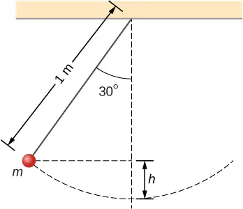
Strategy
Using our problem-solving strategy, the first step is to define that we are interested in the particle-Earth system. Second, only the gravitational force is acting on the particle, which is conservative (step 3). We neglect air resistance in the problem, and no work is done by the string tension, which is perpendicular to the arc of the motion. Therefore, the mechanical energy of the system is conserved, as represented by Equation 8.13, \(0=\Delta(K+U)\). Because the particle starts from rest, the increase in the kinetic energy is just the kinetic energy at the lowest point. This increase in kinetic energy equals the decrease in the gravitational potential energy, which we can calculate from the geometry. In step 4, we choose a reference point for zero gravitational potential energy to be at the lowest vertical point the particle achieves, which is mid-swing. Lastly, in step 5, we set the sum of energies at the highest point (initial) of the swing to the lowest point (final) of the swing to ultimately solve for the final speed.
Solution
We are neglecting non-conservative forces, so we write the energy conservation formula relating the particle at the highest point (initial) and the lowest point in the swing (final) as
Since the particle is released from rest, the initial kinetic energy is zero. At the lowest point, we define the gravitational potential energy to be zero. Therefore our conservation of energy formula reduces to
The vertical height of the particle is not given directly in the problem. This can be solved for by using trigonometry and two givens: the length of the pendulum and the angle through which the particle is vertically pulled up. Looking at the diagram, the vertical dashed line is the length of the pendulum string. The vertical height is labeled h. The other partial length of the vertical string can be calculated with trigonometry. That piece is solved for by
Therefore, by looking at the two parts of the string, we can solve for the height h,
We substitute this height into the previous expression solved for speed to calculate our result:
Significance
We found the speed directly from the conservation of mechanical energy, without having to solve the differential equation for the motion of a pendulum (see Oscillations). We can approach this problem in terms of bar graphs of total energy. Initially, the particle has all potential energy, being at the highest point, and no kinetic energy. When the particle crosses the lowest point at the bottom of the swing, the energy moves from the potential energy column to the kinetic energy column. Therefore, we can imagine a progression of this transfer as the particle moves between its highest point, lowest point of the swing, and back to the highest point (Figure 8.8). As the particle travels from the lowest point in the swing to the highest point on the far right hand side of the diagram, the energy bars go in reverse order from (c) to (b) to (a).
![Bar graphs representing the total energy (E), potential energy (U), and kinetic energy (K) of the particle in different positions are shown. In figure (a), the total energy of the system equals the potential energy and the kinetic energy is zero. In figure (b), the kinetic and potential energies are equal, and the kinetic energy plus potential energy bar graphs equal the total energy. In figure (c) the kinetic energy bar graph is equal to the total energy of the system and the potential energy is zero. The total energy bar is the same height in all three graphs.](img/cnx-uphysics-08-03-energybars.webp)
Check Your Understanding
How high above the bottom of its arc is the particle in the simple pendulum above, when its speed is \(0.81\:\text{m}\text{/}\text{s}?\)
Answer
\(0.10\:\text{m}\)
Example 8.8 Air Resistance on a Falling Object
A helicopter is hovering at an altitude of \(1\:\text{km}\) when a panel from its underside breaks loose and plummets to the ground (Figure 8.9). The mass of the panel is \(15\:\text{kg},\) and it hits the ground with a speed of \(45\:\text{m}\text{/}\text{s}\). How much mechanical energy was dissipated by air resistance during the panel’s descent?
![An illustration of a helicopter and a panel an unspecified distance below it, where terminal velocity is reached. The panel begins its fall from the helicopter. Bar graphs are shown for the panel at the start of its fall and once it has reached terminal velocity. At the start, the potential energy U is equal to the total energy E, and the kinetic energy is zero. Once the panel reaches terminal velocity, the kinetic energy is no longer zero, the potential energy has decreased, and the total energy is still the sum of the kinetic plus potential energies, but this total has also decreased.](img/cnx-uphysics-08-03-helicopter.webp)
Strategy
Step 1: Here only one body is being investigated.
Step 2: Gravitational force is acting on the panel, as well as air resistance, which is stated in the problem.
Step 3: Gravitational force is conservative; however, the non-conservative force of air resistance does negative work on the falling panel, so we can use the conservation of mechanical energy, in the form expressed by Equation 8.12, to find the energy dissipated. This energy is the magnitude of the work:
Step 4: The initial kinetic energy, at \(y_{\text{i}}=1\:\text{km},\) is zero. We set the gravitational potential energy to zero at ground level out of convenience.
Step 5: The non-conservative work is set equal to the energies to solve for the work dissipated by air resistance.
Solution
The mechanical energy dissipated by air resistance is the algebraic sum of the gain in the kinetic energy and loss in potential energy. Therefore the calculation of this energy is
Significance
Most of the initial mechanical energy of the panel \((U_{\text{i}})\), 147 kJ, was lost to air resistance. Notice that we were able to calculate the energy dissipated without knowing what the force of air resistance was, only that it was dissipative.
Check Your Understanding
You probably recall that, neglecting air resistance, if you throw a projectile straight up, the time it takes to reach its maximum height equals the time it takes to fall from the maximum height back to the starting height. Suppose you cannot neglect air resistance, as in Example 8.8. Is the time the projectile takes to go up (a) greater than, (b) less than, or (c) equal to the time it takes to come back down? Explain.
Answer
b. At any given height, the gravitational potential energy is the same going up or down, but the kinetic energy is less going down than going up, since air resistance is dissipative and does negative work. Therefore, at any height, the speed going down is less than the speed going up, so it must take a longer time to go down than to go up.
In these examples, we were able to use conservation of energy to calculate the speed of a particle just at particular points in its motion. But the method of analyzing particle motion, starting from energy conservation, is more powerful than that. More advanced treatments of the theory of mechanics allow you to calculate the full time dependence of a particle’s motion, for a given potential energy. In fact, it is often the case that a better model for particle motion is provided by the form of its kinetic and potential energies, rather than an equation for force acting on it. (This is especially true for the quantum mechanical description of particles like electrons or atoms.)
We can illustrate some of the simplest features of this energy-based approach by considering a particle in one-dimensional motion, with potential energy U(x) and no non-conservative interactions present. Equation 8.12 and the definition of velocity require
Separate the variables x and t and integrate, from an initial time \(t=0\) to an arbitrary time, to get
If you can do the integral in Equation 8.14, then you can solve for x as a function of t.
Example 8.9 Constant Acceleration
Use the potential energy \(U(x)=E(x\text{/}x_{0}),\) for \(E \gt 0,\) in Equation 8.14 to find the position x of a particle as a function of time t.
Strategy
Since we know how the potential energy changes as a function of x, we can substitute for \(U(x)\) in Equation 8.14, integrate, and then solve for x. This results in an expression of x as a function of time with constants of energy E, mass m, and the initial position \(x_{0}.\)
Solution
Following the first two suggested steps in the above strategy,
Solving for the position, we obtain \(x(t)=x_{0}-\frac{1}{2}(E\text{/}mx_{0})t^{2}\).
Significance
The position as a function of time, for this potential, represents one-dimensional motion with constant acceleration, \(a=(\:-E\text{/}mx_{0}),\) starting at rest from position \(x_{0}.\) This is not so surprising, since this is a potential energy for a constant force, \(F=-dU\text{/}dx=\:-E\text{/}x_{0},\) and \(a=F\text{/}m.\)
Check Your Understanding
What potential energy \(U(x)\) can you substitute in Equation 8.13 that will result in motion with constant velocity of 2 m/s for a particle of mass 1 kg and mechanical energy 1 J?
Answer
constant \(U(x)=-1\:\text{J}\)
We will look at another more physically appropriate example of the use of Equation 8.13 after we have explored some further implications that can be drawn from the functional form of a particle’s potential energy.
Systems with Several Particles or Objects¶
Systems generally consist of more than one particle or object. However, the conservation of mechanical energy, in one of the forms in Equation 8.12 or Equation 8.13, is a fundamental law of physics and applies to any system. You just have to include the kinetic and potential energies of all the particles, and the work done by all the non-conservative forces acting on them. Until you learn more about the dynamics of systems composed of many particles, in Linear Momentum and Collisions, Fixed-Axis Rotation, and Angular Momentum, it is better to postpone discussing the application of energy conservation to then.
8.4 Potential Energy Diagrams and Stability¶
Learning Objectives
By the end of this section, you will be able to:
- Create and interpret graphs of potential energy
- Explain the connection between stability and potential energy
Often, you can get a good deal of useful information about the dynamical behavior of a mechanical system just by interpreting a graph of its potential energy as a function of position, called a potential energy diagram. This is most easily accomplished for a one-dimensional system, whose potential energy can be plotted in one two-dimensional graph—for example, U(x) versus x—on a piece of paper or a computer program. For systems whose motion is in more than one dimension, the motion needs to be studied in three-dimensional space. We will simplify our procedure for one-dimensional motion only.
First, let’s look at an object, freely falling vertically, near the surface of Earth, in the absence of air resistance. The mechanical energy of the object is conserved, \(E=K+U,\) and the potential energy, with respect to zero at ground level, is \(U(y)=mgy,\) which is a straight line through the origin with slope \(mg\). In the graph shown in Figure 8.10, the x-axis is the height above the ground y and the y-axis is the object’s energy.
![The energy, in units of Joules, is plotted as a function of height above the ground in meters. The graph of potential energy U is a straight red line through the origin, where y sub zero equals zero. The equation of the line is given as U of y equals m g y. The graph of the total energy E which is equal to K plus U is a constant, which appears as a black horizontal line. The height above the ground where the E and U graphs intersect is y sub max. The energy between the red U line and the horizontal axis us U sub A. The energy between the red U of y line and the black E line is K sub A.](img/cnx-uphysics-08-04-pegrav.webp)
The line at energy E represents the constant mechanical energy of the object, whereas the kinetic and potential energies, \(K_{A}\) and \(U_{A},\) are indicated at a particular height \(y_{A}.\) You can see how the total energy is divided between kinetic and potential energy as the object’s height changes. Since kinetic energy can never be negative, there is a maximum potential energy and a maximum height, which an object with the given total energy cannot exceed:
If we use the gravitational potential energy reference point of zero at \(y_{0},\) we can rewrite the gravitational potential energy U as mgy. Solving for y results in
We note in this expression that the quantity of the total energy divided by the weight (mg) is located at the maximum height of the particle, or \(y_{\max}.\) At the maximum height, the kinetic energy and the speed are zero, so if the object were initially traveling upward, its velocity would go through zero there, and \(y_{\max}\) would be a turning point in the motion. At ground level, \(y_{0}=0\), the potential energy is zero, and the kinetic energy and the speed are maximum:
The maximum speed \(\pm v_{0}\) gives the initial velocity necessary to reach \(y_{\max},\) the maximum height, and \(-v_{0}\) represents the final velocity, after falling from \(y_{\max}.\) You can read all this information, and more, from the potential energy diagram we have shown.
Consider a mass-spring system on a frictionless, stationary, horizontal surface, so that gravity and the normal contact force do no work and can be ignored (Figure 8.11). This is like a one-dimensional system, whose mechanical energy E is a constant and whose potential energy, with respect to zero energy at zero displacement from the spring’s unstretched length, \(x=0,\:\text{is}\:U(x)=\frac{1}{2}kx^{2}\).
![Figure a is an illustration of a glider between springs on a horizontal air track. Figure b is a graph of energy in Joules as a function of displacement from unstretched length in meters. The potential energy U of x is plotted as a red upward opening parabola. The function U of x is equal to one half k x squared. The equilibrium point is at the minimum of the parabola, where x sub zero equals zero. The total energy E which is equal to K plus U and is constant is plotted as a horizontal black line. The points where the total E line meets the potential U curve are labeled as turning points. One turning point is at minus x sub max, and the other is at plus x sub max.](img/cnx-uphysics-08-04-pespring.webp)
You can read off the same type of information from the potential energy diagram in this case, as in the case for the body in vertical free fall, but since the spring potential energy describes a variable force, you can learn more from this graph. As for the object in vertical free fall, you can deduce the physically allowable range of motion and the maximum values of distance and speed, from the limits on the kinetic energy, \(0\le K\le E.\) Therefore, \(K=0\) and \(U=E\) at a turning point, of which there are two for the elastic spring potential energy,
The glider’s motion is confined to the region between the turning points, \(-x_{\max}\le x\le x_{\max}.\) This is true for any (positive) value of E because the potential energy is unbounded with respect to x. For this reason, as well as the shape of the potential energy curve, U(x) is called an infinite potential well. At the bottom of the potential well, \(x=0,U=0\) and the kinetic energy is a maximum, \(K=E,\:\text{so}\:v_{\max}=\pm\sqrt{2E\text{/}m}.\)
However, from the slope of this potential energy curve, you can also deduce information about the force on the glider and its acceleration. We saw earlier that the negative of the slope of the potential energy is the spring force, which in this case is also the net force, and thus is proportional to the acceleration. When \(x=0\), the slope, the force, and the acceleration are all zero, so this is an equilibrium point. The negative of the slope, on either side of the equilibrium point, gives a force pointing back to the equilibrium point, \(F=\pm kx,\) so the equilibrium is termed stable and the force is called a restoring force. This implies that U(x) has a relative minimum there. If the force on either side of an equilibrium point has a direction that is the same as the direction of position change, pointing away from the equilibrium point, the equilibrium is termed unstable, and this implies that U(x) has a relative maximum there.
Example 8.10 Quartic and Quadratic Potential Energy Diagram
The potential energy for a particle undergoing one-dimensional motion along the x-axis is \(U(x)=2(x^{4}-x^{2}),\) where U is in joules and x is in meters. The particle is not subject to any non-conservative forces and its mechanical energy is constant at \(E=-0.25\:\text{J}\). (a) Is the motion of the particle confined to any regions on the x-axis, and if so, what are they? (b) Are there any equilibrium points, and if so, where are they and are they stable or unstable?
Strategy
First, we need to graph the potential energy as a function of x. The function is zero at the origin, becomes negative as x increases in the positive or negative directions (\(x^{2}\) is larger than \(x^{4}\) for \(x \lt 1\)), and then becomes positive at sufficiently large \(|x|\). Your graph should look like a double potential well, with the zeros determined by solving the equation \(U(x)=0\), and the extremes determined by examining the first and second derivatives of U(x), as shown in Figure 8.12.
![The potential energy graph U in units of Joules as a function of x in units of meters for a one-dimensional, quartic and quadratic potential energy, is shown with various quantities indicated. The horizontal scale runs from –1.2 to 1.2, labeled at 0.5 m intervals and with grid lines every 0.1 m. The vertical scale runs from –0.55 to +0.55, labeled at 0.1 J intervals with grid lines every 0.05 J. The function U of x equals 2 times the quantity x to the fourth minus x squared. This function goes to infinity at plus and minus infinite x, is zero at x equal to zero and has a minimum value of –0.5 J at x approximately equal to –0.7 m and +0.7 m. The minimum at positive x is labeled as point Q and the minimum at negative x is labeled as point minus Q. The U of x graph crosses U=0, the x axis, in two locations, at x=-1 and x=+1. The total energy E is equal to –0.25 J and is shown as a horizontal line at that value. It intersects the U of x graph at four locations, described from left to right. The leftmost point is at an x value between –0.95 and –0.9 and is labeled as point minus R. The next location at which U=-0.25 is at an x value between –0.4 and –0.35 and is labeled as point minus P. The next location at which U=-0.25 is at an x value between 0.35 and 0.4 and is labeled as point P. The rightmost location at which U=-0.25 is at an x value between 0.9 and 0.95 and is labeled as point R.](img/cnx-uphysics-08-04-pe2blwell.webp)
You can find the values of (a) the allowed regions along the x-axis, for the given value of the mechanical energy, from the condition that the kinetic energy can’t be negative, and (b) the equilibrium points and their stability from the properties of the force (stable for a relative minimum and unstable for a relative maximum of potential energy).
You can just eyeball the graph to reach qualitative answers to the questions in this example. That, after all, is the value of potential energy diagrams. You can see that there are two allowed regions for the motion \((E \gt U)\) and three equilibrium points (slope \(dU\text{/}dx=0),\) of which the central one is unstable \((d^{2}U\text{/}dx^{2} \lt 0),\) and the other two are stable \((d^{2}U\text{/}dx^{2} \gt 0).\)
Solution
a. To find the allowed regions for x, we use the condition
If we complete the square in \(x^{2}\), this condition simplifies to \(2{\left( x^{2}-\frac{1}{2} \right)}^{2}\le\frac{1}{4},\) which we can solve to obtain
This represents two allowed regions, \(x_{p}\le x\le x_{R}\) and \(-x_{R}\le x\le-x_{p},\) where \(x_{p}=0.38\) and \(x_{R}=0.92\) (in meters).
b. To find the equilibrium points, we solve the equation
and find \(x=0\) and \(x=\pm x_{Q}\), where \(x_{Q}=1\text{/}\sqrt{2}=0.707\) (meters). The second derivative
is negative at \(x=0\), so that position is a relative maximum and the equilibrium there is unstable. The second derivative is positive at \(x=\pm x_{Q}\), so these positions are relative minima and represent stable equilibria.
Significance
The particle in this example can oscillate in the allowed region about either of the two stable equilibrium points we found, but it does not have enough energy to escape from whichever potential well it happens to initially be in. The conservation of mechanical energy and the relations between kinetic energy and speed, and potential energy and force, enable you to deduce much information about the qualitative behavior of the motion of a particle, as well as some quantitative information, from a graph of its potential energy.
Check Your Understanding
Repeat Example 8.10 when the particle’s mechanical energy is \(+0.25\:\text{J.}\)
Answer
a. yes, motion confined to \(-1.055\:\text{m}\le x\le 1.055\:\text{m}\); b. same equilibrium points and types as in example
Before ending this section, let’s practice applying the method based on the potential energy of a particle to find its position as a function of time, for the one-dimensional, mass-spring system considered earlier in this section.
Example 8.11 Sinusoidal Oscillations
Find x(t) for a particle moving with a constant mechanical energy \(E \gt 0\) and a potential energy \(U(x)=\frac{1}{2}kx^{2}\), when the particle starts from rest at time \(t=0\).
Strategy
We follow the same steps as we did in Example 8.9. Substitute the potential energy U into Equation 8.14 and factor out the constants, like m or k. Integrate the function and solve the resulting expression for position, which is now a function of time.
Solution
Substitute the potential energy in Equation 8.14 and integrate using an integral solver found on a web search:
From the initial conditions at \(t=0,\) the initial kinetic energy is zero and the initial potential energy is \(\frac{1}{2}kx_{0}{}^{2}=E,\) from which you can see that \(x_{0}\text{/}\sqrt{(2E\text{/}k)}=\pm 1\) and \(\sin^{-1}(\pm)=\pm{90}^{0}.\) Now you can solve for x:
Significance
A few paragraphs earlier, we referred to this mass-spring system as an example of a harmonic oscillator. Here, we anticipate that a harmonic oscillator executes sinusoidal oscillations with a maximum displacement of \(\sqrt{(2E\text{/}k)}\) (called the amplitude) and a rate of oscillation of \((1\text{/}2\pi)\sqrt{k\text{/}m}\) (called the frequency). Further discussions about oscillations can be found in Oscillations.
Check Your Understanding
Find \(x(t)\) for the mass-spring system in Example 8.11 if the particle starts from \(x_{0}=0\) at \(t=0.\) What is the particle’s initial velocity?
Answer
\(x(t)=\pm\sqrt{(2E\text{/}k)}\:\sin\left[ \left( \sqrt{k\text{/}m} \right)t \right]\:\text{and}\:v_{0}=\pm\sqrt{(2E\text{/}m)}\)
8.5 Sources of Energy¶
Learning Objectives
By the end of this section, you will be able to:
- Describe energy transformations and conversions in general terms
- Explain what it means for an energy source to be renewable or nonrenewable
In this chapter, we have studied energy. We learned that energy can take different forms and can be transferred from one form to another. You will find that energy is discussed in many everyday, as well as scientific, contexts, because it is involved in all physical processes. It will also become apparent that many situations are best understood, or most easily conceptualized, by considering energy. So far, no experimental results have contradicted the conservation of energy. In fact, whenever measurements have appeared to conflict with energy conservation, new forms of energy have been discovered or recognized in accordance with this principle.
What are some other forms of energy? Many of these are covered in later chapters (also see Figure 8.13), but let’s detail a few here:
- Atoms and molecules inside all objects are in random motion. The internal kinetic energy from these random motions is called thermal energy, because it is related to the temperature of the object. In this case, the energy is known as heat energy.
- Electrical energy is a common form that is converted to many other forms and does work in a wide range of practical situations.
- Fuels, such as gasoline and food, have chemical energy, which is potential energy arising from their molecular structure. Chemical energy can be converted into thermal energy by reactions like oxidation. Chemical reactions can also produce electrical energy, such as in batteries. Electrical energy can, in turn, produce thermal energy and light, such as in an electric heater or a light bulb.
- Light is just one kind of electromagnetic radiation, or radiant energy, which also includes radio, infrared, ultraviolet, X-rays, and gamma rays. All bodies with thermal energy can radiate energy in electromagnetic waves.
- Nuclear energy comes from reactions and processes that convert measurable amounts of mass into energy. Nuclear energy is transformed into radiant energy in the Sun, into thermal energy in the boilers of nuclear power plants, and then into electrical energy in the generators of power plants. These and all other forms of energy can be transformed into one another and, to a certain degree, can be converted into mechanical work.
![Examples of the uses of different forms of energy are shown via photographs and conversions from one form to another via arrows. A photograph of the sun illustrates nuclear energy. Nuclear fusion produces energy in the sun, which is the ultimate source of all energy on earth (see chapter 43.) the sun’s nuclear energy may be converted to thermal, radiant, electrical, or chemical energy. Thermal energy is illustrated by a photograph of wind mills. Wind arises from movement of air as the atmosphere tries to equalize global temperatures (see chapter 18.) Radiant energy is illustrated by a photograph of solar panels. Many materials absorb radiant energy as heat or electricity (see chapters 18, 33, and 39.) electrical energy is illustrated by a photograph of a of a laptop computer. Mechanical energy produces electricity by moving a conductor through a magnetic field (see chapter 29.) chemical energy is illustrated by a photograph of a gas burner flame. Burning is the oxidation of carbon compounds, as in an engine (see chapter 21.) Thermal energy and electrical energy can be converted into radiant or chemical energy.](img/cnx-uphysics-08-05-enerforms.webp)
The transformation of energy from one form into another happens all the time. The chemical energy in food is converted into thermal energy through metabolism; light energy is converted into chemical energy through photosynthesis. Another example of energy conversion occurs in a solar cell. Sunlight impinging on a solar cell produces electricity, which can be used to run electric motors or heat water. In an example encompassing many steps, the chemical energy contained in coal is converted into thermal energy as it burns in a furnace, to transform water into steam, in a boiler. Some of the thermal energy in the steam is then converted into mechanical energy as it expands and spins a turbine, which is connected to a generator to produce electrical energy. In these examples, not all of the initial energy is converted into the forms mentioned, because some energy is always transferred to the environment.
Energy is an important element at all levels of society. We live in a very interdependent world, and access to adequate and reliable energy resources is crucial for economic growth and for maintaining the quality of our lives. The principal energy resources used in the world are shown in Figure 8.14. The figure distinguishes between two major types of energy sources: renewable and non-renewable, and further divides each type into a few more specific kinds. Renewable sources are energy sources that are replenished through naturally occurring, ongoing processes, on a time scale that is much shorter than the anticipated lifetime of the civilization using the source. Non-renewable sources are depleted once some of the energy they contain is extracted and converted into other kinds of energy. The natural processes by which non-renewable sources are formed typically take place over geological time scales.
![This figure presents pie charts of the total world energy consumption by source in 2010. A pie chart of the total energy consumption indicates that Fossil fuels accout for 80.6 percent, Renewables for16.7 percent, and nuclear for 2.7 percent. A second pie chart breaks down the renewable sources. In this pie chart, biomass heat accounts for 11.44 percent of the renewable sources, solar hot water for 0.17 percent, geothermal heat for 0.12 percent, hydropower for 3.34 percent, ethanol for 0.50 percent, biodiesel for 0.17 percent, biomass electricity for 0.28 percent, wind power for 0.51 percent, geothermal electricity for 0.07 percent, solar P V power for 0.06 percent, solar C S P for 0.002 percent, and ocian power for 0.001 percent.](img/cnx-uphysics-08-05-energyres.webp)
Our most important non-renewable energy sources are fossil fuels, such as coal, petroleum, and natural gas. These account for about 81% of the world’s energy consumption, as shown in the figure. Burning fossil fuels creates chemical reactions that transform potential energy, in the molecular structures of the reactants, into thermal energy and products. This thermal energy can be used to heat buildings or to operate steam-driven machinery. Internal combustion and jet engines convert some of the energy of rapidly expanding gases, released from burning gasoline, into mechanical work. Electrical power generation is mostly derived from transferring energy in expanding steam, via turbines, into mechanical work, which rotates coils of wire in magnetic fields to generate electricity. Nuclear energy is the other non-renewable source shown in Figure 8.14 and supplies about 3% of the world’s consumption. Nuclear reactions release energy by transforming potential energy, in the structure of nuclei, into thermal energy, analogous to energy release in chemical reactions. The thermal energy obtained from nuclear reactions can be transferred and converted into other forms in the same ways that energy from fossil fuels are used.
An unfortunate byproduct of relying on energy produced from the combustion of fossil fuels is the release of carbon dioxide into the atmosphere and its contribution to global warming. Nuclear energy poses environmental problems as well, including the safety and disposal of nuclear waste. Besides these important consequences, reserves of non-renewable sources of energy are limited and, given the rapidly growing rate of world energy consumption, may not last for more than a few hundred years. Considerable effort is going on to develop and expand the use of renewable sources of energy, involving a significant percentage of the world’s physicists and engineers.
Four of the renewable energy sources listed in Figure 8.14—those using material from plants as fuel (biomass heat, ethanol, biodiesel, and biomass electricity)—involve the same types of energy transformations and conversions as just discussed for fossil and nuclear fuels. The other major types of renewable energy sources are hydropower, wind power, geothermal power, and solar power.
Hydropower is produced by converting the gravitational potential energy of falling or flowing water into kinetic energy and then into work to run electric generators or machinery. Converting the mechanical energy in ocean surface waves and tides is in development. Wind power also converts kinetic energy into work, which can be used directly to generate electricity, operate mills, and propel sailboats.
The interior of Earth has a great deal of thermal energy, part of which is left over from its original formation (gravitational potential energy converted into thermal energy) and part of which is released from radioactive minerals (a form of natural nuclear energy). It will take a very long time for this geothermal energy to escape into space, so people generally regard it as a renewable source, when actually, it’s just inexhaustible on human time scales.
The source of solar power is energy carried by the electromagnetic waves radiated by the Sun. Most of this energy is carried by visible light and infrared (heat) radiation. When suitable materials absorb electromagnetic waves, radiant energy is converted into thermal energy, which can be used to heat water, or when concentrated, to make steam and generate electricity (Figure 8.15). However, in another important physical process, known as the photoelectric effect, energetic radiation impinging on certain materials is directly converted into electricity. Materials that do this are called photovoltaics (PV in Figure 8.14). Some solar power systems use lenses or mirrors to concentrate the Sun’s rays, before converting their energy through photovoltaics, and these are qualified as CSP in Figure 8.14.
As we finish this chapter on energy and work, it is relevant to draw some distinctions between two sometimes misunderstood terms in the area of energy use. As we mentioned earlier, the “law of conservation of energy” is a very useful principle in analyzing physical processes. It cannot be proven from basic principles but is a very good bookkeeping device, and no exceptions have ever been found. It states that the total amount of energy in an isolated system always remains constant. Related to this principle, but remarkably different from it, is the important philosophy of energy conservation. This concept has to do with seeking to decrease the amount of energy used by an individual or group through reducing activities (e.g., turning down thermostats, driving fewer kilometers) and/or increasing conversion efficiencies in the performance of a particular task, such as developing and using more efficient room heaters, cars that have greater miles-per-gallon ratings, energy-efficient compact fluorescent lights, etc.
Since energy in an isolated system is not destroyed, created, or generated, you might wonder why we need to be concerned about our energy resources, since energy is a conserved quantity. The problem is that the final result of most energy transformations is waste heat, that is, work that has been “degraded” in the energy transformation. We will discuss this idea in more detail in the chapters on thermodynamics.
Chapter Review¶
Key Terms¶
- conservative force
- force that does work independent of path
- conserved quantity
- one that cannot be created or destroyed, but may be transformed between different forms of itself
- energy conservation
- total energy of an isolated system is constant
- equilibrium point
- position where the assumed conservative, net force on a particle, given by the slope of its potential energy curve, is zero
- exact differential
- is the total differential of a function and requires the use of partial derivatives if the function involves more than one dimension
- mechanical energy
- sum of the kinetic and potential energies
- non-conservative force
- force that does work that depends on path
- non-renewable
- energy source that is not renewable, but is depleted by human consumption
- potential energy
- function of position, energy possessed by an object relative to the system considered
- potential energy diagram
- graph of a particle’s potential energy as a function of position
- potential energy difference
- negative of the work done acting between two points in space
- renewable
- energy source that is replenished by natural processes, over human time scales
- turning point
- position where the velocity of a particle, in one-dimensional motion, changes sign
Key Equations¶
| Difference of potential energy | \(\Delta U_{AB}=U_{B}-U_{A}=-W_{AB}\) |
| Potential energy with respect to zero of potential energy at \({\mathbf{\vec{r}}}_{0}\) |
\(\Delta U=U(\mathbf{\vec{r}})-U({\mathbf{\vec{r}}}_{0})\) |
| Gravitational potential energy near Earth’s surface | \(U(y)=mgy+\text{const}.\) |
| Potential energy for an ideal spring | \(U(x)=\frac{1}{2}kx^{2}+\text{const}.\) |
| Work done by conservative force over a closed path | \(W_{\text{closed path}}=\displaystyle \int{\mathbf{\vec{F}}}_{\text{cons}}\cdot d\mathbf{\vec{r}}=0\) |
| Condition for conservative force in two dimensions | \(\left( \frac{dF_{x}}{dy} \right)=\left( \frac{dF_{y}}{dx} \right)\) |
| Conservative force is the negative derivative of potential energy | \(F_{l}=-\frac{dU}{dl}\) |
| Conservation of energy with no non-conservative forces |
\(0=W_{nc,AB}=\Delta{(K+U)}_{AB}=\Delta E_{AB}.\) |
Summary¶
8.1 Potential Energy of a System¶
- For a single-particle system, the difference of potential energy is the opposite of the work done by the forces acting on the particle as it moves from one position to another.
- Since only differences of potential energy are physically meaningful, the zero of the potential energy function can be chosen at a convenient location.
- The potential energies for Earth’s constant gravity, near its surface, and for a Hooke’s law force are linear and quadratic functions of position, respectively.
8.2 Conservative and Non-Conservative Forces¶
- A conservative force is one for which the work done is independent of path. Equivalently, a force is conservative if the work done over any closed path is zero.
- A non-conservative force is one for which the work done depends on the path.
- For a conservative force, the infinitesimal work is an exact differential. This implies conditions on the derivatives of the force’s components.
- The component of a conservative force, in a particular direction, equals the negative of the derivative of the potential energy for that force, with respect to a displacement in that direction.
8.3 Conservation of Energy¶
- A conserved quantity is a physical property that stays constant regardless of the path taken.
- A form of the work-energy theorem says that the change in the mechanical energy of a particle equals the work done on it by non-conservative forces.
- If non-conservative forces do no work and there are no external forces, the mechanical energy of a particle stays constant. This is a statement of the conservation of mechanical energy and there is no change in the total mechanical energy.
- For one-dimensional particle motion, in which the mechanical energy is constant and the potential energy is known, the particle’s position, as a function of time, can be found by evaluating an integral that is derived from the conservation of mechanical energy.
8.4 Potential Energy Diagrams and Stability¶
- Interpreting a one-dimensional potential energy diagram allows you to obtain qualitative, and some quantitative, information about the motion of a particle.
- At a turning point, the potential energy equals the mechanical energy and the kinetic energy is zero, indicating that the direction of the velocity reverses there.
- The negative of the slope of the potential energy curve, for a particle, equals the one-dimensional component of the conservative force on the particle. At an equilibrium point, the slope is zero and is a stable (unstable) equilibrium for a potential energy minimum (maximum).
8.5 Sources of Energy¶
- Energy can be transferred from one system to another and transformed or converted from one type into another. Some of the basic types of energy are kinetic, potential, thermal, and electromagnetic.
- Renewable energy sources are those that are replenished by ongoing natural processes, over human time scales. Examples are wind, water, geothermal, and solar power.
- Non-renewable energy sources are those that are depleted by consumption, over human time scales. Examples are fossil fuel and nuclear power.
Conceptual Questions¶
8.1 Potential Energy of a System¶
1. The kinetic energy of a system must always be positive or zero. Explain whether this is true for the potential energy of a system.
Answer
The potential energy of a system can be negative because its value is relative to a defined point.
2. The force exerted by a diving board is conservative, provided the internal friction is negligible. Assuming friction is negligible, describe changes in the potential energy of a diving board as a swimmer drives from it, starting just before the swimmer steps on the board until just after their feet leave it.
3. Describe the gravitational potential energy transfers and transformations for a javelin, starting from the point at which an athlete picks up the javelin and ending when the javelin is stuck into the ground after being thrown.
Answer
If the reference point of the ground is zero gravitational potential energy, the javelin first increases its gravitational potential energy, followed by a decrease in its gravitational potential energy as it is thrown until it hits the ground. The overall change in gravitational potential energy of the javelin is zero unless the center of mass of the javelin is lower than from where it is initially thrown, and therefore would have slightly less gravitational potential energy.
4. A couple of soccer balls of equal mass are kicked off the ground at the same speed but at different angles. Soccer ball A is kicked off at an angle slightly above the horizontal, whereas ball B is kicked slightly below the vertical. How do each of the following compare for ball A and ball B? (a) The initial kinetic energy and (b) the change in gravitational potential energy from the ground to the highest point? If the energy in part (a) differs from part (b), explain why there is a difference between the two energies.
5. What is the dominant factor that affects the speed of an object that started from rest down a frictionless incline if the only work done on the object is from gravitational forces?
Answer
the vertical height from the ground to the object
6. Two people observe a leaf falling from a tree. One person is standing on a ladder and the other is on the ground. If each person were to compare the energy of the leaf observed, would each person find the following to be the same or different for the leaf, from the point where it falls off the tree to when it hits the ground: (a) the kinetic energy of the leaf; (b) the change in gravitational potential energy; (c) the final gravitational potential energy?
8.2 Conservative and Non-Conservative Forces¶
7. What is the physical meaning of a non-conservative force?
Answer
A force that takes energy away from the system that can’t be recovered if we were to reverse the action.
8. A bottle rocket is shot straight up in the air with a speed \(30\:\text{m/s}\). If the air resistance is ignored, the bottle would go up to a height of approximately \(46\:\text{m}\). However, the rocket goes up to only \(35\:\text{m}\) before returning to the ground. What happened? Explain, giving only a qualitative response.
9. An external force acts on a particle during a trip from one point to another and back to that same point. This particle is only affected by conservative forces. Does this particle’s kinetic energy and potential energy change as a result of this trip?
Answer
The change in kinetic energy is the net work. Since conservative forces are path independent, when you are back to the same point the kinetic and potential energies are exactly the same as the beginning. During the trip the total energy is conserved, but both the potential and kinetic energy change.
8.3 Conservation of Energy¶
10. When a body slides down an inclined plane, does the work of friction depend on the body’s initial speed? Answer the same question for a body sliding down a curved surface.
11. Consider the following scenario. A car for which friction is not negligible accelerates from rest down a hill, running out of gasoline after a short distance (see below). The driver lets the car coast farther down the hill, then up and over a small crest. He then coasts down that hill into a gas station, where he brakes to a stop and fills the tank with gasoline. Identify the forms of energy the car has, and how they are changed and transferred in this series of events.
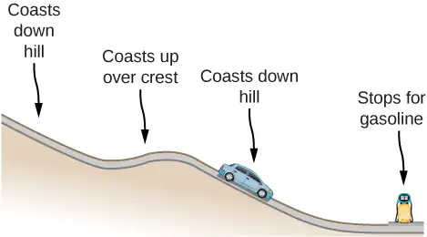
Answer
The car experiences a change in gravitational potential energy as it goes down the hills because the vertical distance is decreasing. Some of this change of gravitational potential energy will be taken away by work done by friction. The rest of the energy results in a kinetic energy increase, making the car go faster. Lastly, the car brakes and will lose its kinetic energy to the work done by braking to a stop.
12. A dropped ball bounces to one-half its original height. Discuss the energy transformations that take place.
13. “\(E=K+U\) constant is a special case of the work-energy theorem.” Discuss this statement.
Answer
It states that total energy of the system E is conserved as long as there are no non-conservative forces acting on the object.
14. In a common physics demonstration, a bowling ball is suspended from the ceiling by a rope.
The professor pulls the ball away from its equilibrium position and holds it adjacent to his nose, as shown below. He releases the ball so that it swings directly away from him. Does he get struck by the ball on its return swing? What is he trying to show in this demonstration?
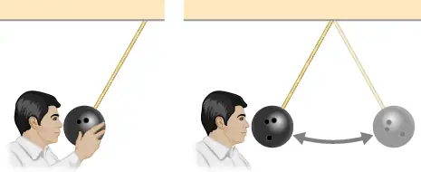
15. A child jumps up and down on a bed, reaching a higher height after each bounce. Explain how the child can increase his maximum gravitational potential energy with each bounce.
Answer
He puts energy into the system through his legs compressing and expanding.
16. Can a non-conservative force increase the mechanical energy of the system?
17. Neglecting air resistance, how much would I have to raise the vertical height if I wanted to double the impact speed of a falling object?
Answer
Four times the original height would double the impact speed.
18. A box is dropped onto a spring at its equilibrium position. The spring compresses with the box attached and comes to rest. Since the spring is in the vertical position, does the change in the gravitational potential energy of the box while the spring is compressing need to be considered in this problem?
Problems¶
8.1 Potential Energy of a System¶
19. Using values from Table 8.1, how many DNA molecules could be broken by the energy carried by a single electron in the beam of an old-fashioned TV tube? (These electrons were not dangerous in themselves, but they did create dangerous X-rays. Later-model tube TVs had shielding that absorbed X-rays before they escaped and exposed viewers.)
Answer
40,000
20. If the energy in fusion bombs were used to supply the energy needs of the world, how many of the 9-megaton variety would be needed for a year’s supply of energy (using data from this equation)?
21. A camera weighing 10 N falls from a small drone hovering \(20\:\text{m}\) overhead and enters free fall. What is the gravitational potential energy change of the camera from the drone to the ground if you take a reference point of (a) the ground being zero gravitational potential energy? (b) The drone being zero gravitational potential energy? What is the gravitational potential energy of the camera (c) before it falls from the drone and (d) after the camera lands on the ground if the reference point of zero gravitational potential energy is taken to be a second person looking out of a building \(30\:\text{m}\) from the ground?
Answer
\(\text{a.}\:-200\:\text{J};\:\text{b.}\:-200\:\text{J};\:\text{c.}\:-100\:\text{J};\:\text{d.}\:-300\:\text{J}\)
22. Someone drops a \(50-\text{g}\) pebble off of a docked cruise ship, \(70.0\:\text{m}\) above the water level. A person on a dock \(3.0\:\text{m}\) above the water level holds out a net to catch the pebble. (a) How much work is done on the pebble by gravity during the drop? (b) What is the change in the gravitational potential energy during the drop? If the gravitational potential energy is zero at the water line, what is the gravitational potential energy (c) when the pebble is dropped? (d) When it reaches the net? What if the gravitational potential energy was \(30.0\) Joules at water level? (e) Find the answers to the same questions in (c) and (d).
23. A cat’s crinkle ball toy of mass \(15\:\text{g}\) is thrown straight up with an initial speed of \(3\:\text{m/s}\). Assume in this problem that air drag is negligible. (a) What is the kinetic energy of the ball as it leaves the hand? (b) How much work is done by the gravitational force during the ball’s rise to its peak? (c) What is the change in the gravitational potential energy of the ball during the rise to its peak? (d) If the gravitational potential energy is taken to be zero at the point where it leaves your hand, what is the gravitational potential energy when it reaches the maximum height? (e) What if the gravitational potential energy is taken to be zero at the maximum height the ball reaches, what would the gravitational potential energy be when it leaves the hand? (f) What is the maximum height the ball reaches?
Answer
\(\text{a.}\:0.068\:\text{J};\:\text{b.}\:-0.068\:\text{J};\:\text{c.}\:0.068\:\text{J};\:\text{d.}\:0.068\:\text{J};\:\text{e.}\:-0.068\:\text{J};\:\text{f.}\:46\:\text{cm}\)
8.2 Conservative and Non-Conservative Forces¶
24. A force \(F(x)=(3.0\text{/}x)\:\text{N}\) acts on a particle as it moves along the positive x-axis. (a) How much work does the force do on the particle as it moves from \(x=2.0\:\text{m}\) to \(x=5.0\:\text{m?}\) (b) Why is it not possible to choose \(x=\infty\) or \(x_{0}=0\) as the reference point for the potential energy associated with this force?
25. A force \(F(x)=(-5.0x^{2}+7.0x)\:\text{N}\) acts on a particle. How much work does the force do on the particle as it moves from \(x=2.0\:\text{m}\) to \(x=5.0\:\text{m?}\)
Answer
\(-120\:\text{J}\)
26. Find the force corresponding to the potential energy \(U(x)=-a\text{/}x+b\text{/}x^{2}.\)
27. The potential energy function for either one of the two atoms in a diatomic molecule is often approximated by \(U(x)=a\text{/}x^{12}-b\text{/}x^{6}\) where x is the distance between the atoms. (a) At what distance of separation does the potential energy have a local minimum (not at \(x=\infty)?\) (b) What is the force on an atom at this separation? (c) How does the force vary with the separation distance?
Answer
a. \({\left( \frac{2a}{b} \right)}^{1\text{/}6}\); b. \(0\); c. \(\sim x^{6}\)
28. A particle of mass \(2.0\:\text{kg}\) moves under the influence of the force \(F(x)=\left( 3\text{/}\sqrt{x} \right)\:\text{N}.\) If its speed at \(x=2.0\:\text{m}\) is \(v=6.0\:\text{m/s,}\) what is its speed at \(x=7.0\:\text{m?}\)
29. A particle of mass \(2.0\:\text{kg}\) moves under the influence of the force \(F(x)=(-5x^{2}+7x)\:\text{N}.\) If its speed at \(x=-4.0\:\text{m}\) is \(v=20.0\:\text{m/s,}\) what is its speed at \(x=4.0\:\text{m}?\)
Answer
\(14\:\text{m}\text{/}\text{s}\)
30. A crate on rollers is being pushed without frictional loss of energy across the floor of a freight car (see the following figure). The car is moving to the right with a constant speed \(v_{0}.\) If the crate starts at rest relative to the freight car, then from the work-energy theorem, \(Fd=mv^{2}\text{/}2,\) where d, the distance the crate moves, and v, the speed of the crate, are both measured relative to the freight car. (a) To an observer at rest beside the tracks, what distance \(d'\) is the crate pushed when it moves the distance d in the car? (b) What are the crate’s initial and final speeds \(v_{0}'\) and \(v'\) as measured by the observer beside the tracks? (c) Show that \(Fd'=m{(v')}^{2}\text{/}2-m{(v{'}_{0})}^{2}\text{/}2\) and, consequently, that work is equal to the change in kinetic energy in both reference systems.
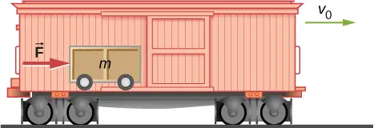
8.3 Conservation of Energy¶
31. A boy throws a ball of mass \(0.25\:\text{kg}\) straight upward with an initial speed of \(20\:\text{m}\text{/}\text{s}\) When the ball returns to the boy, its speed is \(17\:\text{m}\text{/}\text{s}\) How much much work does air resistance do on the ball during its flight?
Answer
\(-14\:\text{J}\)
32. A mouse of mass 200 g falls 100 m down a vertical mine shaft and lands at the bottom with a speed of 8.0 m/s. During its fall, how much work is done on the mouse by air resistance?
33. Using energy considerations and assuming negligible air resistance, show that a rock thrown from a bridge 20.0 m above water with an initial speed of 15.0 m/s strikes the water with a speed of 24.8 m/s independent of the direction thrown. (Hint: show that \(K_{\text{i}}+U_{\text{i}}=K_{\text{f}}+U_{\text{f}})\)
Answer
proof
34. A 1.0-kg ball at the end of a 2.0-m string swings in a vertical plane. At its lowest point the ball is moving with a speed of 10 m/s. (a) What is its speed at the top of its path? (b) What is the tension in the string when the ball is at the bottom and at the top of its path?
35. Ignoring details associated with friction, extra forces exerted by arm and leg muscles, and other factors, we can consider a pole vault as the conversion of an athlete’s running kinetic energy to gravitational potential energy. If an athlete is to lift their body 4.8 m during a vault, what speed must they have when they plant the pole?
Answer
\(9.7\:\text{m}\text{/}\text{s}\)
36. Tarzan grabs a vine hanging vertically from a tall tree when he is running at \(9.0\:\text{m}\text{/}\text{s}.\) (a) How high can he swing upward? (b) Does the length of the vine affect this height?
37. Assume that the force of a bow on an arrow behaves like the spring force. In aiming the arrow, an archer pulls the bow back 50 cm and holds it in position with a force of \(150\:\text{N}\). If the mass of the arrow is \(50\:\text{g}\) and the “spring” is massless, what is the speed of the arrow immediately after it leaves the bow?
Answer
\(39\:\text{m}\text{/}\text{s}\)
38. A \(100-\text{kg}\) man is skiing across level ground at a speed of \(8.0\:\text{m/s}\) when he comes to the small slope 1.8 m higher than ground level shown in the following figure. (a) If the skier coasts up the hill, what is his speed when he reaches the top plateau? Assume friction between the snow and skis is negligible. (b) What is his speed when he reaches the upper level if an \(80-\text{N}\) frictional force acts on the skis?
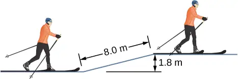
39. A sled of mass 70 kg starts from rest and slides down a \(10{}^{\circ}\) incline \(80\:\text{m}\) long. It then travels for 20 m horizontally before starting back up an \(8{}^{\circ}\) incline. It travels 80 m along this incline before coming to rest. What is the magnitude of the net work done on the sled by friction?
Answer
1900 J
40. A girl on a skateboard (total mass of 40 kg) is moving at a speed of 10 m/s at the bottom of a long ramp. The ramp is inclined at \(20{}^{\circ}\) with respect to the horizontal. If she travels 14.2 m upward along the ramp before stopping, what is the net frictional force on her?
41. A baseball of mass 0.25 kg is hit at home plate with a speed of 40 m/s. When it lands in a seat in the left-field bleachers a horizontal distance 120 m from home plate, it is moving at 30 m/s. If the ball lands 20 m above the spot where it was hit, how much work is done on it by air resistance?
Answer
–39 J
42. A small block of mass m slides without friction around the loop-the-loop apparatus shown below. (a) If the block starts from rest at A, what is its speed at B? (b) What is the force of the track on the block at B?
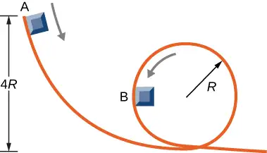
43. The massless spring of a spring gun has a force constant \(k=12\:\text{N/m}.\) When the gun is aimed vertically, a 15-g projectile is shot to a height of 0.50 m above the end of the expanded spring. (See below.) How much was the spring compressed initially?
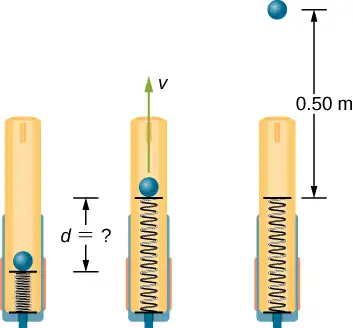
Answer
0.12 m
44. A small ball is tied to a string and set rotating with negligible friction in a vertical circle. If the ball moves over the top of the circle at its slowest possible speed (so that the tension in the string is negligible), what is the tension in the string at the bottom of the circle, assuming there is no additional energy added to the ball during rotation?
8.4 Potential Energy Diagrams and Stability¶
45. A mysterious constant force of 10 N acts horizontally on everything. The direction of the force is found to be always pointed toward a wall in a big hall. Find the potential energy of a particle due to this force when it is at a distance x from the wall, assuming the potential energy at the wall to be zero.
Answer
10x with x-axis pointed away from the wall and origin at the wall
46. A single force \(F(x)=-4.0x\) (in newtons) acts on a 1.0-kg body. When \(x=3.5\:\text{m,}\) the speed of the body is 4.0 m/s. What is its speed at \(x=2.0\:\text{m?}\)
47. A particle of mass 4.0 kg is constrained to move along the x-axis under a single force \(F(x)=-cx^{3},\) where \(c=8.0\:\text{N/m}^{3}.\) The particle’s speed at A, where \(x_{A}=1.0\:\text{m,}\) is 6.0 m/s. What is its speed at B, where \(x_{B}=-2.0\:\text{m?}\)
Answer
4.6 m/s
48. The force on a particle of mass 2.0 kg varies with position according to \(F(x)=-3.0x^{2}\) (x in meters, F(x) in newtons). The particle’s velocity at \(x=2.0\:\text{m}\) is 5.0 m/s. Calculate the mechanical energy of the particle using (a) the origin as the reference point and (b) \(x=4.0\:\text{m}\) as the reference point. (c) Find the particle’s velocity at \(x=1.0\:\text{m}.\) Do this part of the problem for each reference point.
49. A 4.0-kg particle moving along the x-axis is acted upon by the force whose functional form appears below. The velocity of the particle at \(x=0\) is \(v=6.0\:\text{m/s}.\) Find the particle’s speed at \(x=(\text{a})2.0\:\text{m},(\text{b})4.0\:\text{m},(\text{c})10.0\:\text{m},(\text{d})\) Does the particle turn around at some point and head back toward the origin? (e) Repeat part (d) if \(v=2.0\:\text{m/s}\:\text{at}\:x=0.\)
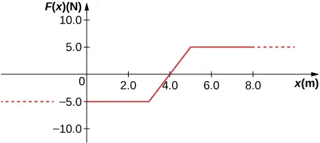
Answer
a. 5.6 m/s; b. 5.2 m/s; c. 6.4 m/s; d. no; e. yes
50. A particle of mass 0.50 kg moves along the x-axis with a potential energy whose dependence on x is shown below. (a) What is the force on the particle at \(x=2.0,5.0,8.0,\:\text{and}\) 12 m? (b) If the total mechanical energy E of the particle is −6.0 J, what are the minimum and maximum positions of the particle? (c) What are these positions if \(E=2.0\:\text{J?}\) (d) If \(E=16\:\text{J}\), what are the speeds of the particle at the positions listed in part (a)?
![The energy I of x in Joules is plotted as a function of x in meters. The horizontal scale runs from less thqan zero to over 20 meters, but is labeled only from 0 to 20. The vertical scale runs from –12.0 to 12 Joules. U of x is a cponstant 4.0 Joules for all x less than 4.0 meters. It rises linearly to 12.0 Joules at 6.0 meters, then decreases linearly to –12.0 Joules at 10.0 meters. It remains –12.0 Joules from 10.0 to 14.0 meters, then rises to 12.0 Joules at 18 meters. It remains at 12.0 joules for all x larger than 18 meters.](img/cnx-uphysics-08-04-p6-img.webp)
51. (a) Sketch a graph of the potential energy function \(U(x)=kx^{2}\text{/}2+Ae^{-\alpha x^{2}},\) where \(k,A,\:\text{and}\:\alpha\) are constants. (b) What is the force corresponding to this potential energy? (c) Suppose a particle of mass m moving with this potential energy has a velocity \(v_{a}\) when its position is \(x=a\). Show that the particle does not pass through the origin unless
Answer
a.
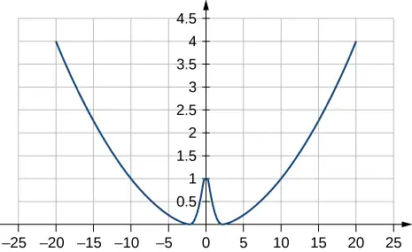
where \(k=0.02,A=1,\alpha=1\); b. \(F(x)=-\frac{dU(x)}{dx}=-kx+2A\alpha xe^{-\alpha x^{2}}\); c. The potential energy at \(x=0\) must be less than the kinetic plus potential energy at \(x=\text{a}\) or \(A\le\frac{1}{2}mv^{2}+\frac{1}{2}ka^{2}+Ae^{-\alpha a^{2}}.\) Solving this for A matches results in the problem.
8.5 Sources of Energy¶
52. In the cartoon movie Pocahontas, Pocahontas runs to the edge of a cliff and jumps off, showcasing the fun side of her personality. (a) If she is running at 3.0 m/s before jumping off the cliff and she hits the water at the bottom of the cliff at 20.0 m/s, how high is the cliff? Assume negligible air drag in this cartoon. (b) If she jumped off the same cliff from a standstill, how fast would she be falling right before she hit the water?
53. In the reality television show “Amazing Race”, a contestant is firing 3.0-kg watermelons from a slingshot to hit targets down the field. The slingshot is pulled back 2.0 m and the watermelon is considered to be at ground level. The launch point is 0.75 m from the ground and the targets are 10 m horizontally away. Calculate the spring constant of the slingshot.
Answer
490 N/m
54. In the Back to the Future movies, a DeLorean car of mass 1230 kg travels at 88 miles per hour to venture back to the future. (a) What is the kinetic energy of the DeLorean? (b) What spring constant would be needed to stop this DeLorean in a distance of 0.1m?
55. In the Hunger Games movie, Katniss Everdeen fires a 0.0200-kg arrow from ground level to pierce an apple up on a stage. The spring constant of the bow is 330 N/m and she pulls the arrow back a distance of 0.55 m. The apple on the stage is 5.00 m higher than the launching point of the arrow. At what speed does the arrow (a) leave the bow? (b) strike the apple?
Answer
a. 70.6 m/s; b. 69.9 m/s
56. In a “Top Fail” video, two women run at each other and collide by hitting exercise balls together. If each woman has a mass of 50 kg, which includes the exercise ball, and one woman runs to the right at 2.0 m/s and the other is running toward her at 1.0 m/s, (a) how much total kinetic energy is there in the system? (b) If energy is conserved after the collision and each exercise ball has a mass of 2.0 kg, how fast would the balls fly off toward the camera?
57. In a Coyote/Road Runner cartoon clip, a spring expands quickly and sends the coyote into a rock. If the spring extended 5 m and sent the coyote of mass 20 kg to a speed of 15 m/s, (a) what is the spring constant of this spring? (b) If the coyote were sent vertically into the air with the energy given to him by the spring, how high could he go if there were no non-conservative forces?
Answer
a. 180 N/m; b. 11 m
58. In an iconic movie scene, Forrest Gump runs around the country. If he is running at a constant speed of 3 m/s, would it take him more or less energy to run uphill or downhill and why?
59. In the movie Monty Python and the Holy Grail a cow is catapulted from the top of a castle wall over to the people down below. The gravitational potential energy is set to zero at ground level. The cow is launched from a spring of spring constant \(1.1\:\times\:{10}^{4}\:\text{N/m}\) that is expanded 0.5 m from equilibrium. If the castle is 9.1 m tall and the mass of the cow is 110 kg, (a) what is the gravitational potential energy of the cow at the top of the castle? (b) What is the elastic spring energy of the cow before the catapult is released? (c) What is the speed of the cow right before it lands on the ground?
Answer
a. \(9.8\:\times\:{10}^{3}\:\text{J}\); b. \(1.4\:\times\:{10}^{3}\:\text{J}\); c. 14 m/s
60. A 60.0-kg skier with an initial speed of 12.0 m/s coasts up a 2.50-m high rise as shown. Find her final speed at the top, given that the coefficient of friction between her skis and the snow is 0.80.
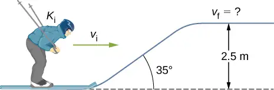
61. (a) How high a hill can a car coast up (engines disengaged) if work done by friction is negligible and its initial speed is 110 km/h? (b) If, in actuality, a 750-kg car with an initial speed of 110 km/h is observed to coast up a hill to a height 22.0 m above its starting point, how much thermal energy was generated by friction? (c) What is the average force of friction if the hill has a slope of \(2.5{}^{\circ}\) above the horizontal?
Answer
a. 47.6 m; b. \(1.88\:\times\:{10}^{5}\:\text{J}\); c. 373 N
62. A \(5.00\:\times\:{10}^{5}\:\text{-kg}\) subway train is brought to a stop from a speed of 0.500 m/s in 0.400 m by a large spring bumper at the end of its track. What is the spring constant k of the spring?
63. A pogo stick has a spring with a spring constant of \(2.5\:\times\:{10}^{4}\:\text{N/m,}\) which can be compressed 12.0 cm. To what maximum height from the uncompressed spring can a child jump on the stick using only the energy in the spring, if the child and stick have a total mass of 40 kg?
Answer
33.9 cm
64. A block of mass 500 g is attached to a spring of spring constant 80 N/m (see the following figure). The other end of the spring is attached to a support while the mass rests on a rough surface with a coefficient of friction of 0.20 that is inclined at angle of \(30{}^{\circ}.\) The block is pushed along the surface till the spring compresses by 10 cm and is then released from rest. (a) How much potential energy was stored in the block-spring-support system when the block was just released? (b) Determine the speed of the block when it crosses the point when the spring is neither compressed nor stretched. (c) Determine the position of the block where it just comes to rest on its way up the incline.
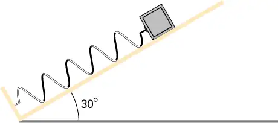
65. A block of mass 200 g is attached at the end of a massless spring at equilibrium length of spring constant 50 N/m. The other end of the spring is attached to the ceiling and the mass is released at a height considered to be where the gravitational potential energy is zero. (a) What is the net potential energy of the block at the instant the block is at the lowest point? (b) What is the net potential energy of the block at the midpoint of its descent? (c) What is the speed of the block at the midpoint of its descent?
Answer
a. Zero, since the total energy of the system is zero and the kinetic energy at the lowest point is zero; b. –0.038 J; c. 0.62 m/s
66. A T-shirt cannon launches a shirt at 5.00 m/s from a platform height of 3.00 m from ground level. How fast will the shirt be traveling if it is caught by someone whose hands are (a) 1.00 m from ground level? (b) 4.00 m from ground level? Neglect air drag.
67. A child (32 kg) jumps up and down on a trampoline. The trampoline exerts a spring restoring force on the child with a constant of 5000 N/m. At the highest point of the bounce, the child is 1.0 m above the level surface of the trampoline. What is the compression distance of the trampoline? Neglect the bending of the legs or any transfer of energy of the child into the trampoline while jumping.
Answer
42 cm
68. Shown below is a box of mass \(m_{1}\) that sits on a frictionless incline at an angle above the horizontal \(\theta=30{}^{\circ}\). This box is connected by a relatively massless string, over a frictionless pulley, and finally connected to a box at rest over the ledge, labeled \(m_{2}\). If \(m_{1}\) and \(m_{2}\) are a height h above the ground and \(m_{2} \gt \gt m_{1}\): (a) What is the initial gravitational potential energy of the system? (b) What is the final kinetic energy of the system when \(m_{2}\) hits the ground?
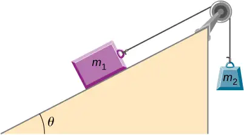
Additional Problems¶
69. A massless spring with force constant \(k=200\:\text{N/m}\) hangs from the ceiling. A 2.0-kg block is attached to the free end of the spring and released. If the block falls 17 cm before starting back upwards, how much work is done by friction during its descent?
Answer
–0.44 J
70. A particle of mass 2.0 kg moves under the influence of the force \(F(x)=(5x^{2}-7x)\:\text{N}.\) Suppose a frictional force also acts on the particle. If the particle’s speed when it starts at \(x=-4.0\:\text{m}\) is 0.0 m/s and when it arrives at \(x=4.0\:\text{m}\) is 9.0 m/s, how much work is done on it by the frictional force between \(x=-4.0\:\text{m}\) and \(x=4.0\:\text{m?}\)
71. Block 2 shown below slides along a frictionless table as block 1 falls. Both blocks are attached by a frictionless pulley. Find the speed of the blocks after they have each moved 2.0 m. Assume that they start at rest and that the pulley has negligible mass. Use \(m_{1}=2.0\:\text{kg}\) and \(m_{2}=4.0\:\text{kg}.\)
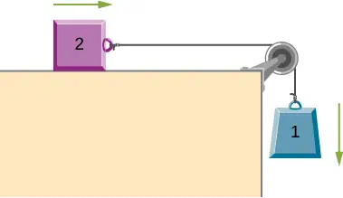
Answer
3.6 m/s
72. A body of mass m and negligible size starts from rest and slides down the surface of a frictionless solid sphere of radius R. (See below.) Prove that the body leaves the sphere when \(\theta=\cos^{-1}(2\text{/}3).\)
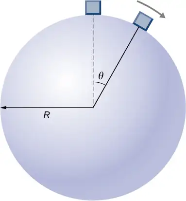
73. A mysterious force acts on all particles along a particular line and always points towards a particular point P on the line. The magnitude of the force on a particle increases as the cube of the distance from that point; that is \(F\infty r^{3}\), if the distance from P to the position of the particle is r. Let b be the proportionality constant, and write the magnitude of the force as \(F=br^{3}\). Find the potential energy of a particle subjected to this force when the particle is at a distance D from P, assuming the potential energy to be zero when the particle is at P.
Answer
\(bD^{4}\text{/}4\)
74. An object of mass 10 kg is released at point A, slides to the bottom of the \(30{}^{\circ}\) incline, then collides with a horizontal massless spring, compressing it a maximum distance of 0.75 m. (See below.) The spring constant is 500 N/m, the height of the incline is 2.0 m, and the horizontal surface is frictionless. (a) What is the speed of the object at the bottom of the incline? (b) What is the work of friction on the object while it is on the incline? (c) The spring recoils and sends the object back toward the incline. What is the speed of the object when it reaches the base of the incline? (d) What vertical distance does it move back up the incline?
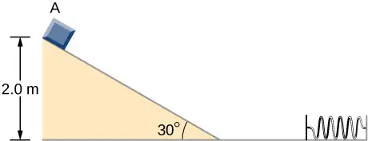
75. Shown below is a small ball of mass m attached to a string of length a. A small peg is located a distance h below the point where the string is supported. If the ball is released when the string is horizontal, show that h must be greater than 3a/5 if the ball is to swing completely around the peg.
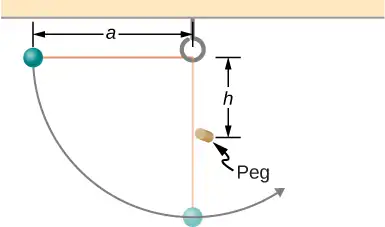
Answer
proof
76. A block leaves a frictionless inclined surface horizontally after dropping off by a height h. Find the horizontal distance D where it will land on the floor, in terms of h, H, and g.
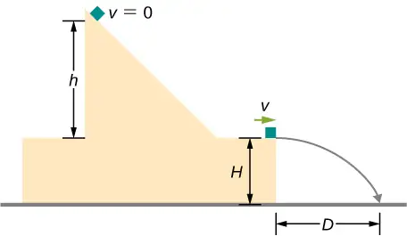
77. A block of mass m, after sliding down a frictionless incline, strikes another block of mass M that is attached to a spring of spring constant k (see below). The blocks stick together upon impact and travel together. (a) Find the compression of the spring in terms of m, M, h, g, and k when the combination comes to rest. Hint: The speed of the combined blocks \(m+M\:(v_{2})\) is based on the speed of block m just prior to the collision with the block M (v1) based on the equation \(v_{2}=(m/m)+M\:(v_{1})\). This will be discussed further in the chapter on Linear Momentum and Collisions. (b) The loss of kinetic energy as a result of the bonding of the two masses upon impact is stored in the so-called binding energy of the two masses. Calculate the binding energy.
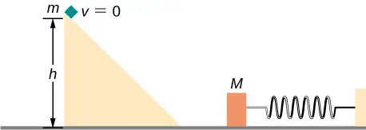
Answer
a. \(\sqrt{\frac{2m^{2}gh}{k(m+M)}}\); b. \(\frac{mMgh}{m+M}\)
78. A block of mass 300 g is attached to a spring of spring constant 100 N/m. The other end of the spring is attached to a support while the block rests on a smooth horizontal table and can slide freely without any friction. The block is pushed horizontally till the spring compresses by 12 cm, and then the block is released from rest. (a) How much potential energy was stored in the block-spring support system when the block was just released? (b) Determine the speed of the block when it crosses the point when the spring is neither compressed nor stretched. (c) Determine the speed of the block when it has traveled a distance of 20 cm from where it was released.
79. Consider a block of mass 0.200 kg attached to a spring of spring constant 100 N/m. The block is placed on a frictionless table, and the other end of the spring is attached to the wall so that the spring is level with the table. The block is then pushed in so that the spring is compressed by 10.0 cm. Find the speed of the block as it crosses (a) the point when the spring is not stretched, (b) 5.00 cm to the left of point in (a), and (c) 5.00 cm to the right of point in (a).
Answer
\(\text{a.}\:2.24\:\text{m}\text{/}\text{s};\:\text{b.}\:1.94\:\text{m}\text{/}\text{s};\:\text{c.}\:1.94\:\text{m}\text{/}\text{s}\)
80. A skier starts from rest and slides downhill. What will be the speed of the skier if he drops by 20 meters in vertical height? Ignore any air resistance (which will, in reality, be quite a lot), and any friction between the skis and the snow.
81. Repeat the preceding problem, but this time, suppose that the work done by air resistance cannot be ignored. Let the work done by the air resistance when the skier goes from A to B along the given hilly path be −2000 J. The work done by air resistance is negative since the air resistance acts in the opposite direction to the displacement. Supposing the mass of the skier is 50 kg, what is the speed of the skier at point B?
Answer
18 m/s
82. Two bodies are interacting by a conservative force. Show that the mechanical energy of an isolated system consisting of two bodies interacting with a conservative force is conserved. (Hint: Start by using Newton’s third law and the definition of work to find the work done on each body by the conservative force.)
83. In an amusement park, a car rolls in a track as shown below. Find the speed of the car at A, B, and C. Note that the work done by the rolling friction is zero since the displacement of the point at which the rolling friction acts on the tires is momentarily at rest and therefore has a zero displacement.
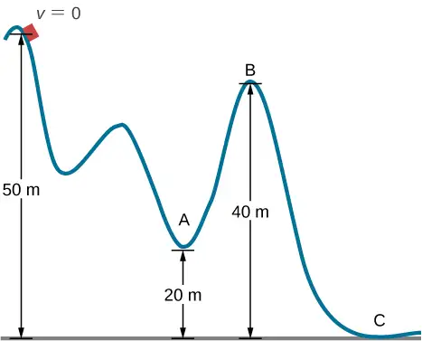
Answer
\(v_{A}=24\:\text{m/s;}\:v_{B}=14\:\text{m/s;}\:v_{C}=31\:\text{m/s}\)
84. A 200-g steel ball is tied to a 2.00-m “massless” string and hung from the ceiling to make a pendulum, and then, the ball is brought to a position making a \(30{}^{\circ}\) angle with the vertical direction and released from rest. Ignoring the effects of the air resistance, find the speed of the ball when the string (a) is vertically down, (b) makes an angle of \(20{}^{\circ}\) with the vertical and (c) makes an angle of \(10{}^{\circ}\) with the vertical.
85. A 300 g hockey puck is shot across an ice-covered pond. Before the hockey puck was hit, the puck was at rest. After the hit, the puck has a speed of 40 m/s. The puck comes to rest after going a distance of 30 m. (a) Describe how the energy of the puck changes over time, giving the numerical values of any work or energy involved. (b) Find the magnitude of the net friction force.
Answer
a. Loss of energy is \(240\:\text{N}\cdot\text{m}\); b. \(F=8\:\text{N}\)
86. A projectile of mass 2 kg is fired with a speed of 20 m/s at an angle of \(30{}^{\circ}\) with respect to the horizontal. (a) Calculate the initial total energy of the projectile given that the reference point of zero gravitational potential energy at the launch position. (b) Calculate the kinetic energy at the highest vertical position of the projectile. (c) Calculate the gravitational potential energy at the highest vertical position. (d) Calculate the maximum height that the projectile reaches. Compare this result by solving the same problem using your knowledge of projectile motion.
87. An artillery shell is fired at a target 200 m above the ground. When the shell is 100 m in the air, it has a speed of 100 m/s. What is its speed when it hits its target? Neglect air friction.
Answer
89.7 m/s
88. How much energy is lost to a dissipative drag force if a 60-kg person falls at a constant speed for 15 meters?
89. A box slides on a frictionless surface with a total energy of 50 J. It hits a spring and compresses the spring a distance of 25 cm from equilibrium. If the same box with the same initial energy slides on a rough surface, it only compresses the spring a distance of 15 cm, how much energy must have been lost by sliding on the rough surface?
Answer
32 J
Adapted from University Physics Volume 1 by OpenStax, licensed under CC BY 4.0. Access the original for free at openstax.org. Changes: converted to the web reading format of The Open Book Project.